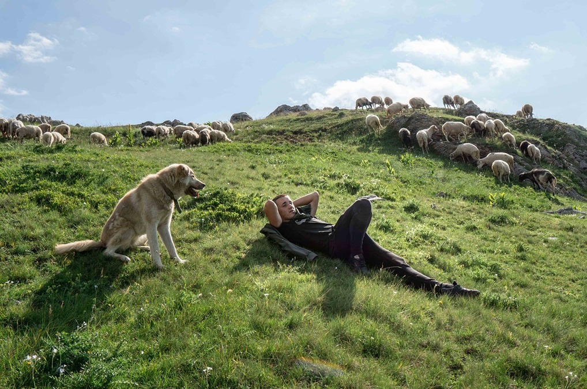

What should I bring? What should I do? How do I reach you? Do you offer discounts? Can I travel with my family? You can find all the answers to these and other questions below.
General
How do I pay for my booked package?
Is Albania safe to visit?
Do I still need to worry about Covid 19?
What is included?
Can we have customised plans for our trip?
Do you offer something special I won't find with other travel operators?
Do you offer discounts on your packages?

Preparing for your Visit
What do I need to bring before my trip?
Where are the Malësorë shepherds located?
How do I reach you?
Is there cell phone reception when I am with the shepherds?
Where does the water we drink during our stay with the shepherds come from?
How much do we trek daily?
Can we choose the shepherd family we wish to stay with?
How long can I stay with the shepherds?
Can my whole family stay with the shepherds?
I’ve never hiked before! Can I still experience life with the shepherds?
Are there any rules that I need to know about before joining the shepherds?
Is there a threat of wild animals if we camp overnight?
What if I don’t like the shepherds' food?
How can I thoroughly enjoy the experience for an extended period if I can't shower or use a civilised toilet?